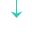

关键能力：TodoList待办任务
通过AI，生成成果物，解决多病种的管理复杂化、需求个性化
待办任务：
提醒时间、
开始时间、
结束时间、
提醒对象、
执行人、
任务内容
基于各类成果物
将管理方案细化到可执行的todo具象化展示
关键能力：干预方案
监测计划
随访计划
饮食方案
运动方案
各类阶段性报告
2026-01-01
任务1、任务2、任务3...
2026-01-02
任务4、任务5、任务6...
关键能力：健康档案
指标记录
饮食记录
病种档案
取药记录
随访记录
运动记录
...
通过AI，生成TodoList，并支持对TodoList进行重排优化。解决多类任务的重复交叉化和效率问题

提供数据支持
1
填写档案/做随访收集数据
2
生成各类
成果物
3
生成并执行
待办
慢管V2.0 的版本目标
形态1：点击调用
（实现方案：dify>agentscope）
形态2：Agent，即独立对话框
（实现方案：agentscope）
用户1
服务提供方，如健管师
1、制定干预方案->生成饮食方案/运动方案：调用单轮工作流
2、制定待办事项->生成待办事项：调用单轮工作流
.....
健管师助手Agent
昵称：MarvelClaw(慢管场景)
用户2
服务接收方：患者
1、查看饮食方案-解读饮食方案：快捷跳入AI健管师对话框
2、查看待办事项-解读待办事项：快捷跳入AI健管师对话框
.....
AI健管师
昵称：小妙、小MAI
一、建立AI共管循环：分为图中3个步骤
二、2个形态 * 2类用户 = 4个触发点
版本号
关键目标
V1.8.0
1、完成干预方案的改造，就是改造成每个方案都独立制定。
2、使用 dify 搭建生成饮食方案、运动方案的 Workflow（并且可以将它包装成 MCP，便于给其他agent服用）
3、完成获取患者健康档案的接口开发，使得 Workflow 或其他 Agent 都可以调用
V1.8.1
1、增加患者端和运营端的待办任务模块
2、增加使用 dify 搭建生成TodoList，并支持对TodoList进行重排优化的 Workflow（并且可以将它包装成 MCP，便于给其他agent复用）
V1.8.2
1、患者端增加AI健管师，提供：通用对话能力、基于某个主题的生效中干预方案的解读能力
2、干预方案中增加AI制定：用药指导、健康周报
V1.8.3
1、运营端增加AI健管师助手，包括3大能力：
个人档案查询：复用V1.8.0的获取患者健康档案接口
扫描和干预和执行：【新】主动发现该管的人，并给出动作（生成干预方案或制定待办任务）
交付物生成：复用V1.8.0和1.8.2的各类干预方案生成能力
V1.8.4
1、随访表单和专病档案改造：表单填写项灵活化，根据待办任务的目标制定新的表单和填写项。便于收集更多信息，利于后面成果物产出和todo的梳理
慢管V1.8 的版本计划
通过AI，根据待办任务的目标制定新的表单和填写项。
便于收集更多信息，利于后面成果物产出和todo的梳理
大脑
饮食方案
· 解读
运动方案
· 解读
用药咨询
· 解读
健康周报
· 解读
主入口
1、日常问题/百科查询
2、有限数据调用：健康档案
引导进入各类专项任务
待办任务
· 解读
专项数据调用：
- 健康档案
- XX方案
专项数据调用：
- 健康档案
- XX方案
专项数据调用：
- 健康档案
- XX方案
专项数据调用：
- 健康档案
- XX方案
专项数据调用：
- 健康档案
- XX方案
关键能力：TodoList待办任务
通过AI，解读成果物，使患者更好的理解和执行
待办任务：
提醒时间、
开始时间、
结束时间、
提醒对象、
执行人、
任务内容
关键能力：干预方案
监测计划
......
饮食方案
运动方案
各类阶段性报告
2026-01-01
任务1、任务2、任务3...
2026-01-02
任务4、任务5、任务6...
关键能力：健康档案
指标记录
饮食记录
病种档案
取药记录
随访记录
运动记录
...
通过AI，解读待办任务，使患者更好的理解和执行
提供数据支持
1
录入指标、饮食运动打卡等
2
查看各类
成果物
3
完成待办任务
通过AI，解读健康现状，使患者更好的理解和执行
患者端
运营端
saas里长AI